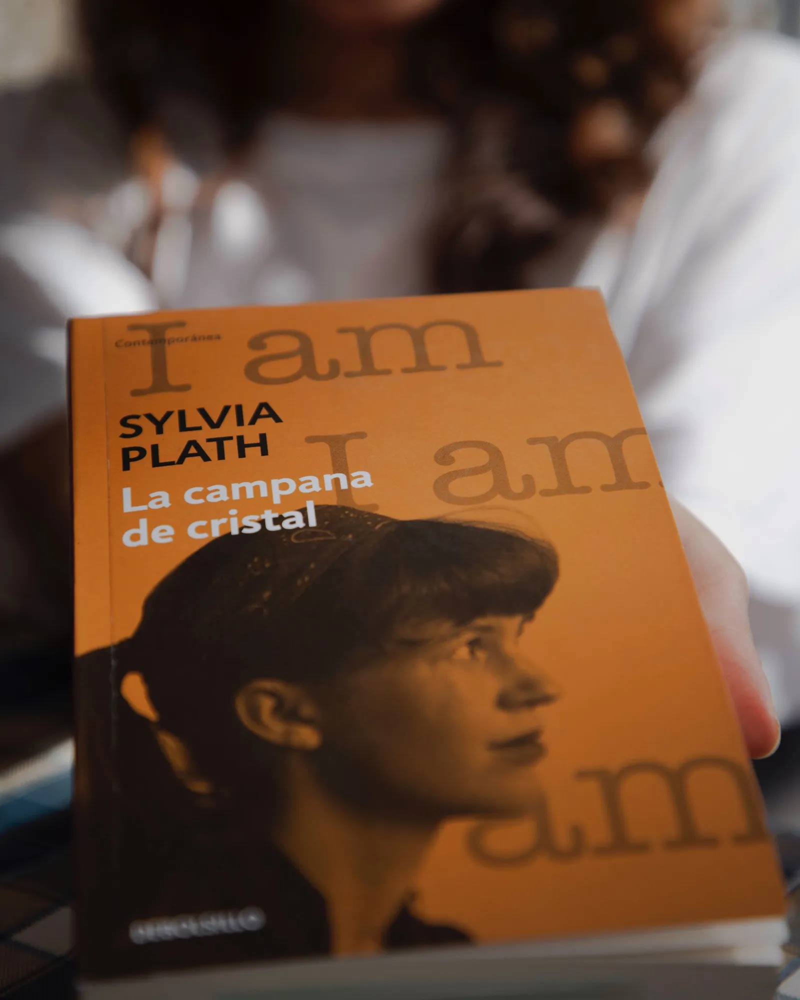

La Campana de Cristal
En “La campana de cristal”, la única novela de la poeta Sylvia Plath, es posible encontrar temas relacionados a la salud mental a través de Esther, el personaje que nos lleva con ella a la gran ciudad luego de ganar un premio que le permite ir de su pueblo a Nueva York, ahí conoce el mundo editorial que la coloca en un estilo de vida contrastante con lo que conoce hasta ese momento. Sobre esta novela comenta la lectora Luisa Briones.

Escrita en primera persona, Esther nos abre las puertas a su mundo interno, a los ecos de la vida que se diluyen entre preguntas, juicios al mundo de lo masculino y dudas ante el deber ser de una mujer. Muestra de manera sutil y cruda cómo, en medio de su construcción personal, los otros, los de afuera, terminan por hacer su psique. ¿Será que realmente tiene talento como escritora? ¿Será que las demás chicas son tan vacías como lo piensa? ¿Sólo están aceptando lo que a ella le cuesta tanto negar?
“—Me puse a enumerar todas las cosas que no sabía hacer.”
A través de frases, Esther nos muestra una y otra vez la profundidad de su sentir en un mundo donde manifestar sus ideas podría dejarla a la deriva de lo que se considera “éxito” o “normalidad”, realizar lo que se supone debe cumplir la deja agotada y confundida, tanto que, en algún punto que constantemente intenta encontrar, sale de la realidad para perderse en su mundo interno, en la tristeza, en el profundo anhelo de dejar de existir.
En una sociedad para la que la enfermedad mental es un tabú, la incomodidad de una mujer se convierte en oportunidad de estudio. Luego de terminar en manos de quienes pondrán de nuevo todo en su lugar, sometida a violentas descargas eléctricas que describe como “ser quemada por dentro”, decide negarse al tratamiento, a no volver más y buscar una manera de acabar con su dolor en libertad.
Esther muestra el camino, la duda, la necesidad de huir de todos y de sí misma sin lograrlo. En ella hay tanta claridad que me resulta difícil creer que no fuera capaz de decidir sobre su existencia. ¿Qué tiene de malo estar cansada? ¿Por qué hay que estar bien? ¿Por qué hay que sobrevivir?
Pensar en algo más allá, algo fuera de Esther, es complicado. No darle la razón a su sentir, a la injusticia que la habita, es casi imposible, pues narra el cotidiano de muchas mujeres (y en paralelo de hombres) sometidas a estándares sociales de la “normalidad”, a eso que le da forma y orden al mundo, pero, ¿está bien?
Sylvia nos invita, nos obliga a ver dentro de sí misma las huellas invisibles de un sistema que castiga a aquellos que no pueden ajustarse a él. Una lectura que definitivamente electriza.
La Navegante Literaria:
Luisa María Briones Gómez (Lu). Cuando era estudiante de Ingeniería, leí que Feynman definió que un sistema no tiene una misma historia, sino todas las historias posibles, lo que me llevó a relacionar mi propia constitución como un sistema de ideas que se ha construido a través de las historias que voy leyendo, desde la ciencia ficción hasta los romances de época, sin discriminar artículos, cómics o novelas gráficas; todo lo que cae en mis manos me cuenta no sólo cómo está construido el mundo de fuera o el mundo de las posibilidades, sino elementos de mí que todavía no conozco.
Café La Fauna es un lugar para compartir un buen momento tomando café, comiendo o buscando libros en Argonáutica, su sala de lectura. Visítala en Morrow 8, Cuernavaca Centro.